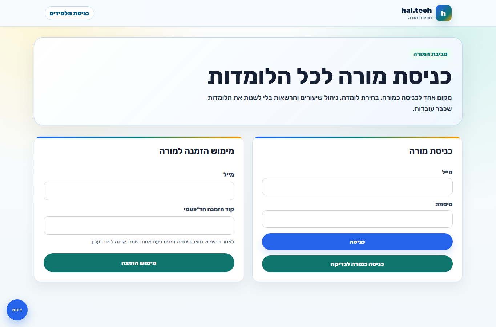
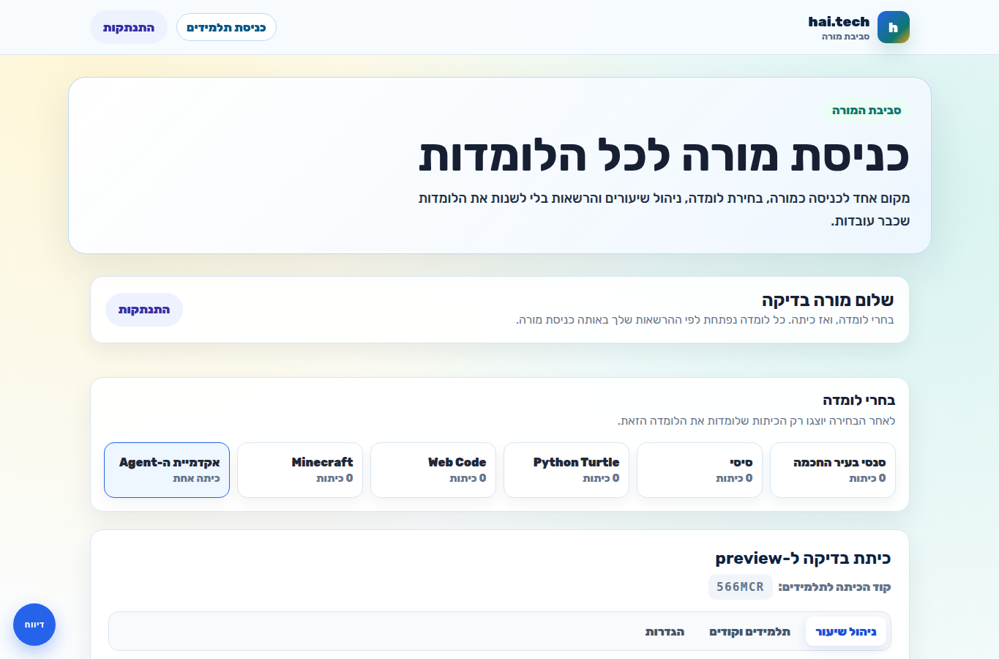
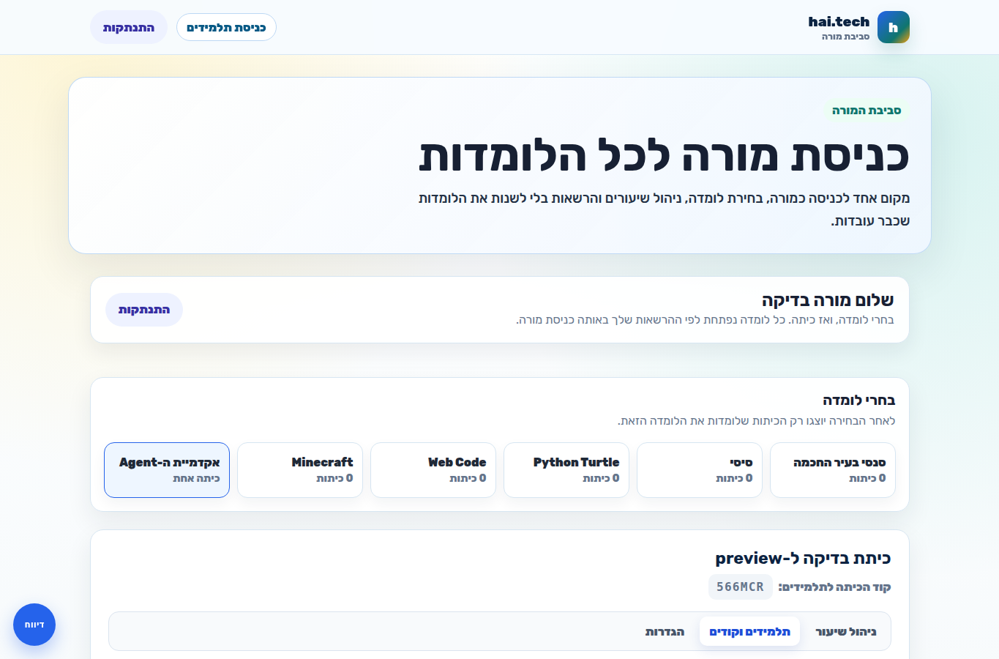
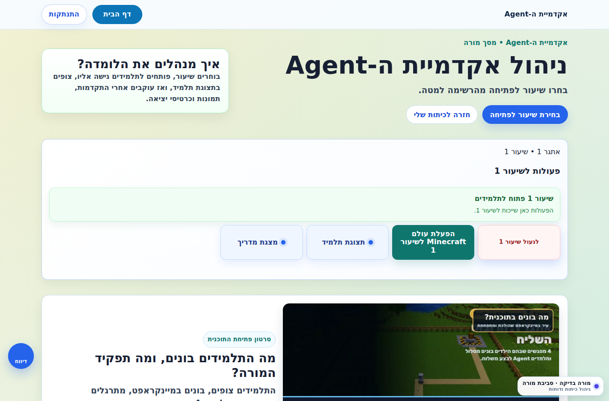
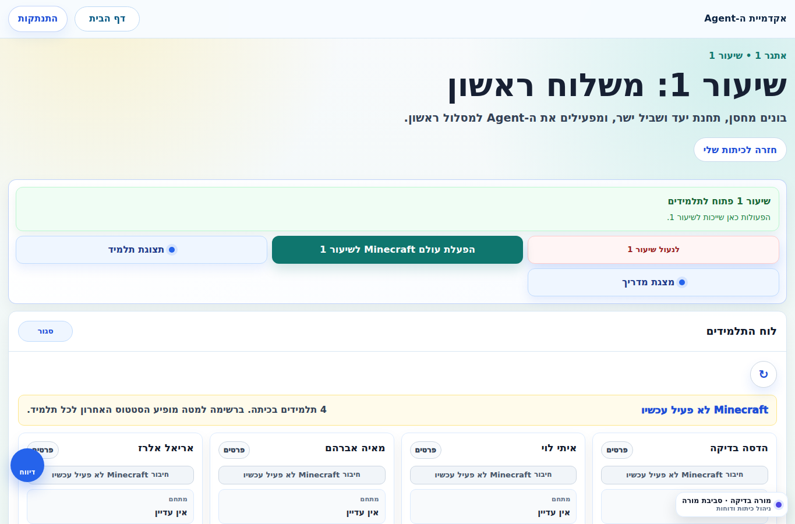
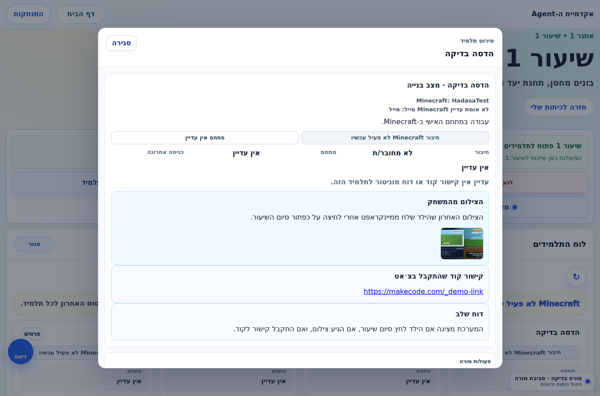
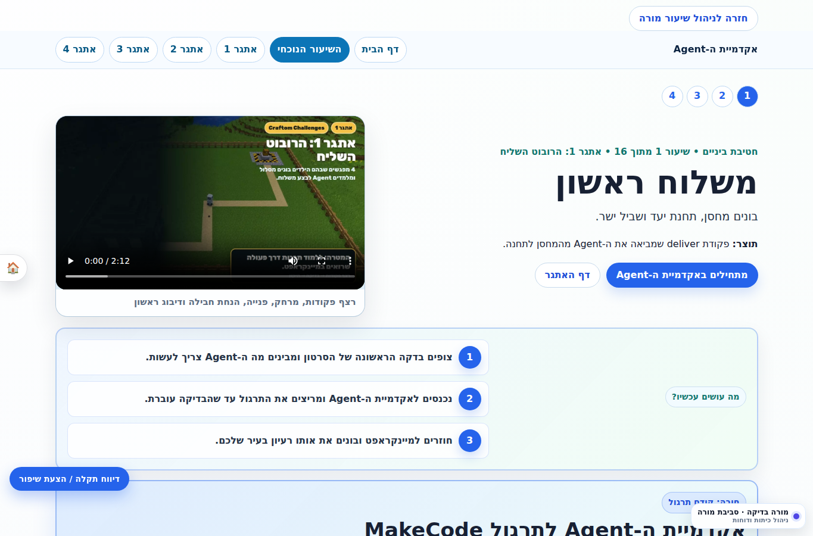
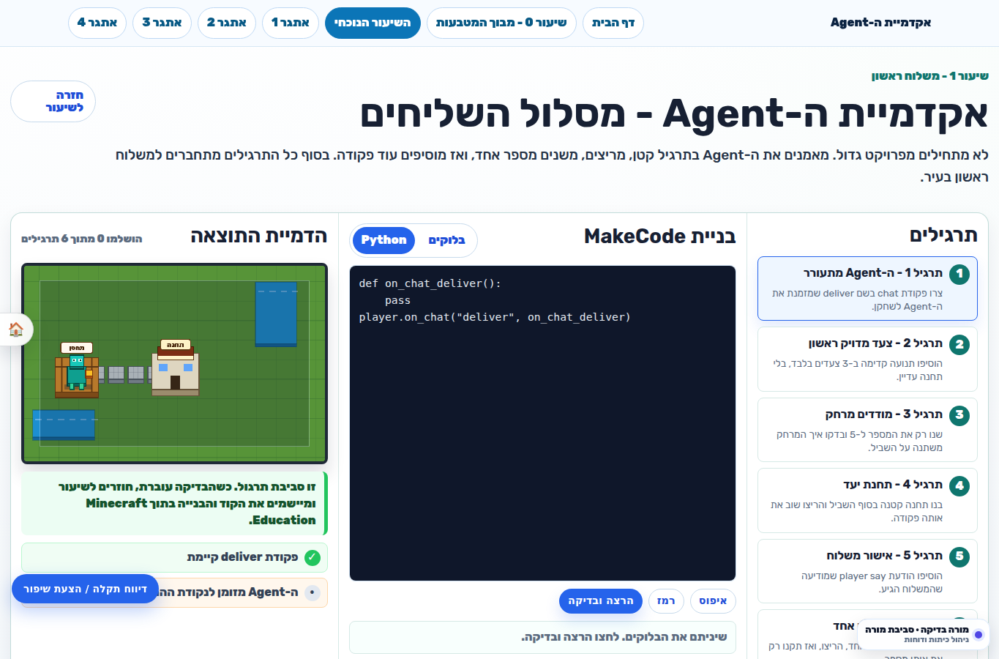
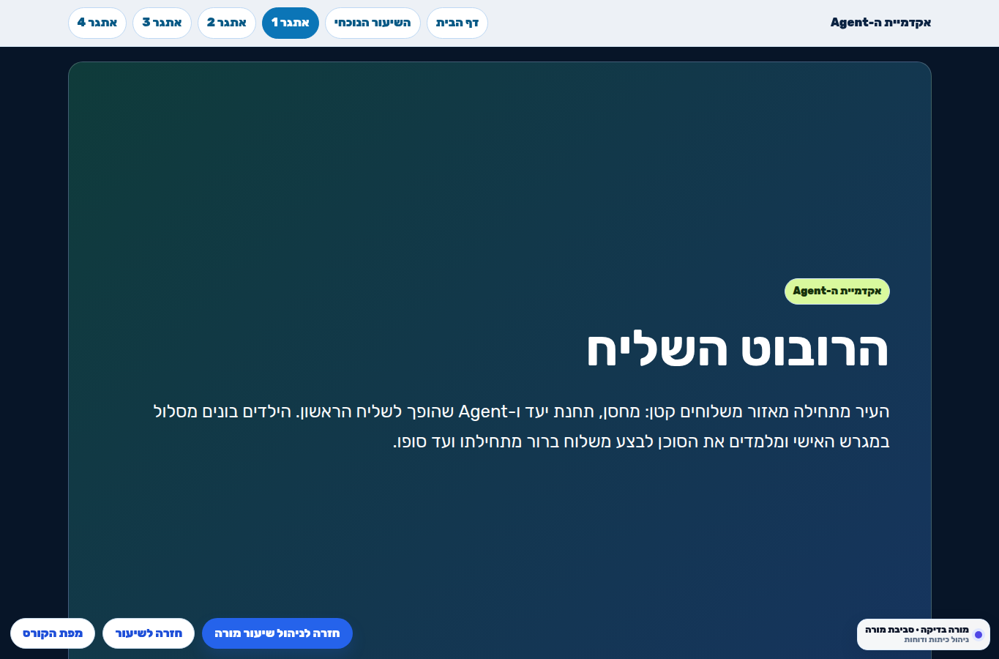

דרך ההייטק · robotics.hai.tech
מדריך מורה
אקדמיית ה-Agent במיינקראפט
איך לעבוד עם הלומדה מהרגע שנכנסים כמורה: פתיחת שיעור, שימוש במצגת, בדיקת תצוגת תלמיד, מעקב אחרי הגשות וצילומים, וסדר שיעור מומלץ.
התמונה הגדולה
המורה עובדת משני מסכים עיקריים: מסך הכיתות, שבו בוחרים כיתה ופותחים שיעורים, ומסך ניהול שיעור, שבו מנהלים את השיעור החי ורואים את מצב התלמידים.
1. כניסה למערכת
- פותחים את
https://robotics.hai.tech/teacher-classrooms.html. - נכנסים עם המייל והסיסמה של המורה.
- אחרי login מגיעים למסך הכיתות.

2. מסך הכיתות: איפה מתחילים שיעור
בלשונית הראשונה של כרטיס הכיתה מופיע ניהול שיעור. זה המקום שבו פותחים שיעור, נכנסים לעמוד כל השיעורים או לעמוד שיעור מסוים.
- בוחרים את הלומדה אקדמיית ה-Agent.
- בוחרים את הכיתה של חני.
- בכרטיס הכיתה, בלשונית ניהול שיעור, רואים את רצף השיעורים.
- השיעור הפעיל מסומן בצורה בולטת; שיעורים שכבר עברו מסומנים כעברנו הלאה.

3. תלמידים וקודים
בלשונית תלמידים וקודים רואים מי בכיתה ומה קוד הכניסה שלו. בזמן שיעור רגיל לא צריך לגעת בזה, אלא רק אם תלמיד לא מצליח להיכנס.

4. דף הבית של אקדמיית ה-Agent
כשנכנסים לעמוד כל השיעורים, הרצף מתחיל משיעור 1. שיעור 0 לא מופיע כאן כדי לא לבלבל את המורה במהלך העבודה השוטפת.
- בראש הדף מופיע השיעור הפעיל הגבוה ביותר שפתוח.
- אם שיעור 3 פתוח, הפעולות למעלה יהיו לשיעור 3.
- אם רק שיעור 1 פתוח, הפעולות יהיו לשיעור 1.

5. מסך ניהול שיעור
זה המסך שהמורה משאירה פתוח בזמן השיעור. כאן רואים את הפעולות לשיעור, כפתור רענון ידני, ורשימת תלמידים.
- תצוגת תלמיד - פותחת למורה איך הדף נראה לילדים.
- מצגת מדריך - פותחת את המצגת שמקרינים בכיתה.
- כפתור רענון - לעדכון מיידי, אם רוצים לבדוק עכשיו.
- המסך מתעדכן אוטומטית כל 30 שניות כשהטאב פתוח, וכל 2 דקות כשהטאב ברקע.

6. איך רואים מה הילדים הגישו
פותחים תלמיד מתוך הרשימה. בפירוט התלמיד המורה רואה קישור קוד, דוח שלב, וצילום שהילד צילם בתוך מיינקראפט.
- הילד לא מעלה תמונה ידנית בלומדה.
- בסוף השיעור הילד לוחץ על כפתור סיום שיעור בתוך המתחם שלו במיינקראפט.
- המערכת שולחת ללומדה את הצילום האחרון שהילד צילם במצלמה במשחק.
- אם הילד לחץ סיום כמה פעמים, המורה רואה את האירוע האחרון.
- התמונה האוטומטית מלמעלה לא מוצגת יותר.

7. מה הילדים עושים בשיעור
שיעור 1 בנוי כך שהילדים מתחילים באקדמיית ה-Agent, עוברים לתרגול/קוד, ואז מיישמים במיינקראפט בתוך המתחם האישי.
- צופים בהסבר קצר עם המורה במצגת.
- פותחים את דף השיעור.
- נכנסים לתרגול אקדמיית ה-Agent ומבינים את רצף הפקודות.
- עוברים למיינקראפט: פותחים Code Builder עם מקש C, בונים את הקוד ב-MakeCode, ומריצים.
- מעתיקים את קישור הקוד, מדביקים בצ׳אט של Minecraft ולוחצים Enter. הקישור נשלח אוטומטית למורה.
- בסוף מצלמים במצלמה במשחק, לוחצים על כפתור סיום שיעור במתחם, והצילום נשלח למורה.

8. אקדמיית ה-Agent והמצגת
אקדמיית ה-Agent היא שלב התרגול: הילדים מתרגלים רעיון קטן של קוד לפני שהם בונים במיינקראפט. באקדמיה אפשר לעבוד בבלוקים וגם לעבור לתצוגת Python, כדי לראות את אותו פתרון כקוד טקסטואלי. המצגת היא כלי ההובלה של המורה בכיתה.


9. מטרת שיעור 1
מטרת השיעור: שהתלמיד יבין שקוד הוא רצף הוראות מדויק ל-Agent: זימון, תנועה קדימה, בדיקת מרחק, תיקון מספר, והגעה ליעד.
- בנייה במיינקראפט: מחסן קטן, תחנת יעד ושביל ישר ביניהם.
- קוד: פקודת chat בשם
deliver, זימון Agent, תנועה קדימה במספר צעדים מתאים, והודעת הגעה. - תוצר למורה: קישור לקוד, צילום מהמשחק, ודוח שלב אם הילד לחץ סיום שיעור.
10. סדר שיעור מומלץ וחלוקת זמנים
11. משימות בנייה כבונוס לתותחים
לתלמידים שמסיימים מהר לא נותנים “לחכות”. נותנים הרחבות בנייה שמחזקות את אותו רעיון.
- להוסיף שלט למחסן ולתחנת היעד.
- להאריך את השביל ולתקן את מספר הצעדים בקוד.
- לבנות שתי תחנות יעד ולבחור לאן ה-Agent מגיע.
- להוסיף “אזור פריקה” קטן בתחנה.
- להוסיף הודעת סיום אחרת בצ׳אט או ב-player say.
- לשבור בכוונה מספר אחד, להריץ, להסביר מה נשבר ולתקן.
- לעצב את המחסן: דלת, חלון, גג ושביל ברור.
- לצלם תמונת “לפני/אחרי” ולשלוח סיום שיעור שוב.
12. צ׳קליסט קצר למורה
- נכנסתי כמורה למסך הכיתות.
- פתחתי את שיעור 1 או בדקתי שהוא פתוח.
- פתחתי את מצגת המדריך.
- בדקתי תצוגת תלמיד לפני שהילדים התחילו.
- הסברתי לילדים לפתוח Code Builder עם C.
- הסברתי להדביק קישור קוד בצ׳אט Minecraft.
- הסברתי ללחוץ בסוף על כפתור סיום שיעור במתחם.
- פתחתי פירוט תלמיד ובדקתי קישור/צילום/דוח.
אם הסטטוסים לא מתעדכנים מיד, לוחצים על כפתור הרענון. העדכון האוטומטי רגוע בכוונה כדי לא להכביד על המערכת.